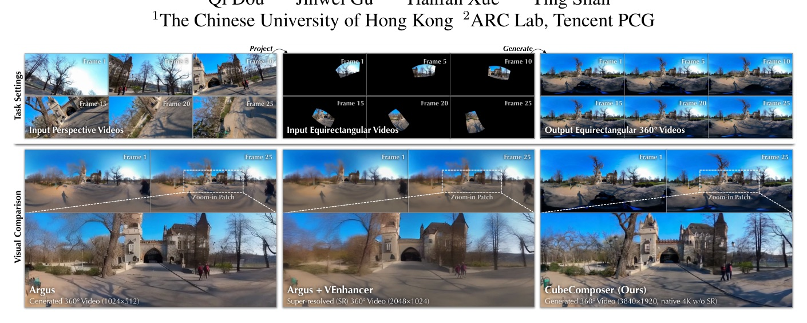
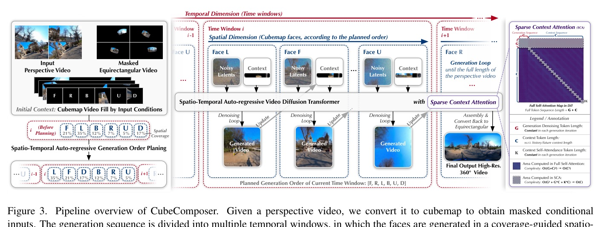
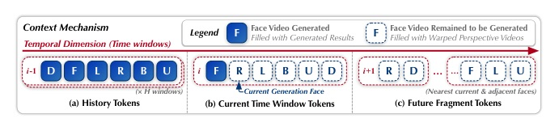
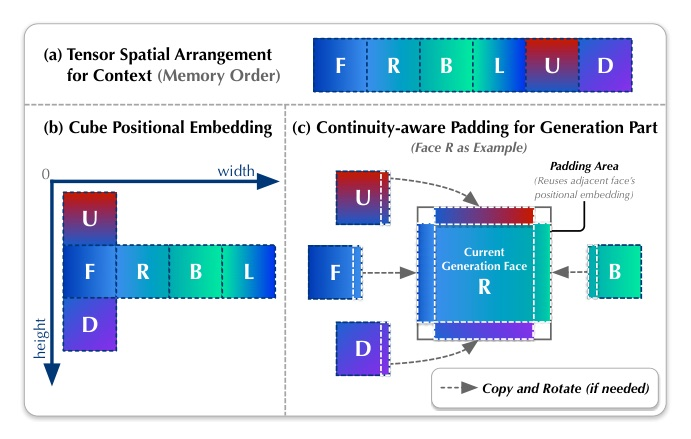
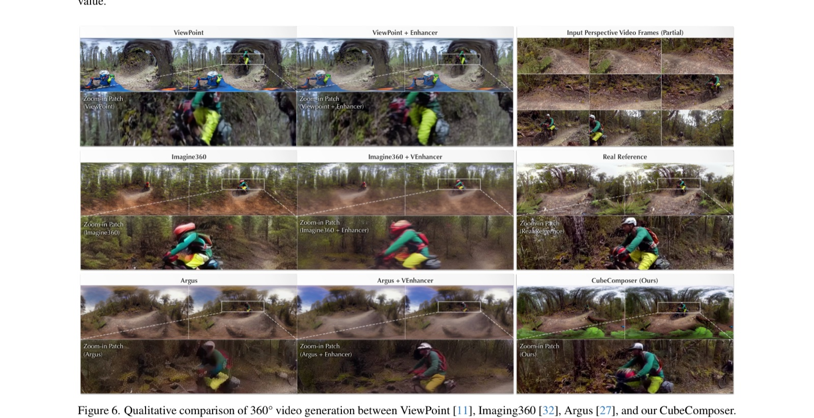
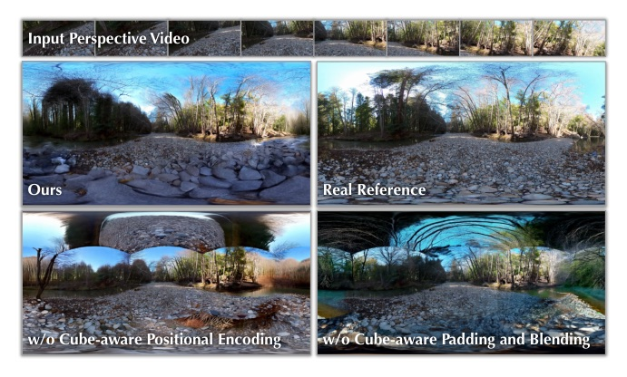

A CVPR 2026 paper that turns perspective-to-360° video into cubemap face × temporal-window autoregressive diffusion.

The key move is not a bigger video DiT; it is changing the sequence: generate one cubemap face over one temporal window, with context.
Temporal AR
Spatio-temporal AR


Sparse context attention is the enabling trick: keep context, remove the C² blow-up.

| Method | Res. | 4K360Vid FVD↓ | 4K360Vid I.Q.↑ | ODV360 FVD↓ | ODV360 I.Q.↑ |
|---|---|---|---|---|---|
| Argus | 1K | 4.0755 | 0.4266 | 12.7548 | 0.3988 |
| Argus + VEnhancer | 2K SR | 6.1337 | 0.4286 | 14.1573 | 0.3671 |
| Imagine360 + VEnhancer | 2K SR | 10.2088 | 0.4270 | 7.3203 | 0.4052 |
| CubeComposer | 2K native | 3.9035 | 0.5214 | 4.2592 | 0.5144 |
| CubeComposer | 4K native | 2.2205 | 0.5618 | 3.5054 | 0.5543 |

| Context type | TFLOPs | FVD↓ | FID↓ | LPIPS↓ | CLIP↑ |
|---|---|---|---|---|---|
| Ours | 350.64 | 4.2592 | 125.5510 | 0.4249 | 0.8911 |
| w/o future tokens | 224.89 | 6.0369 | 128.3274 | 0.4517 | 0.8878 |
| Full tokens | 376.03 | 5.2265 | 116.6476 | 0.4162 | 0.8961 |
| Pos. enc. | Pad+blend | FVD↓ | FID↓ | LPIPS↓ | CLIP↑ |
|---|---|---|---|---|---|
| off | on | 4.3683 | 190.3326 | 0.5600 | 0.8409 |
| on | off | 4.4650 | 201.4123 | 0.5504 | 0.8547 |
| on | on | 4.1961 | 157.1220 | 0.5142 | 0.8590 |

Mechanism insight: CubeComposer uses observation strength to define causality.
By decomposing videos into cubemap representations with six faces, CubeComposer autoregressively synthesizes content in a well-planned spatio-temporal order, reducing memory demands while enabling high-resolution output.
將影片拆成六面 cubemap 後，CubeComposer 依規劃好的時空順序自回歸合成內容，降低記憶體需求並支援高解析輸出。Abstract p.1
This prioritizes well-conditioned faces with more context input, which reduces early uncertainty and effectively propagates geometry, appearance, and motion cues to subsequent faces.
先生成條件較充分的面，可降低早期不確定性，並把幾何、外觀與動作線索傳遞給後續面。§1 p.2
This constrains context self-attention to O(C · K) operations… from square w.r.t. the context length C to linear.
對 context 的自注意力只保留帶狀局部區域，使複雜度由 context 長度的平方降為線性。§3.4 p.6
The proposed mechanism attains LPIPS, CLIP, and FID comparable to the full-context variant and achieves slightly better FVD, while incurring fewer TFLOPs.
所提 context 機制在 LPIPS/CLIP/FID 接近 full-context，FVD 更好且 TFLOPs 更低。§4.3 p.8; Table 2 p.8
Native 4K 360° video by making time and space autoregressive.